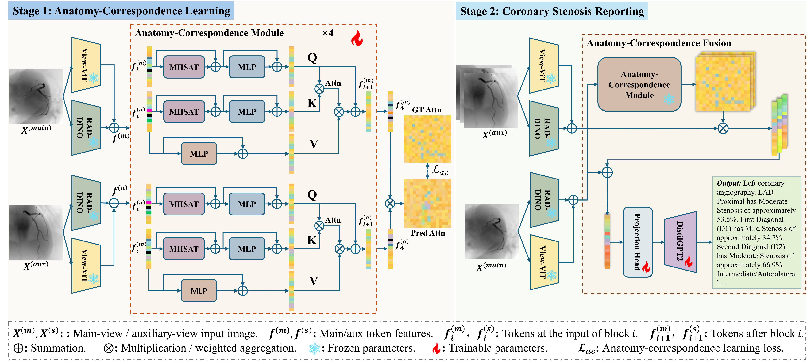

MAC-XA: Multi-view Anatomy-Correspondence Fusion for Coronary Stenosis Reporting from X-ray Angiography
MICCAI 2026 submission
Medical Imaging
Multi-view Learning
Report Generation
We propose an explicit anatomy-correspondence learning framework for
multi-view coronary X-ray angiography report generation. The method
aligns anatomically corresponding regions across views and improves
structured stenosis reporting by fusing clinically relevant evidence
more reliably than implicit attention-based fusion.